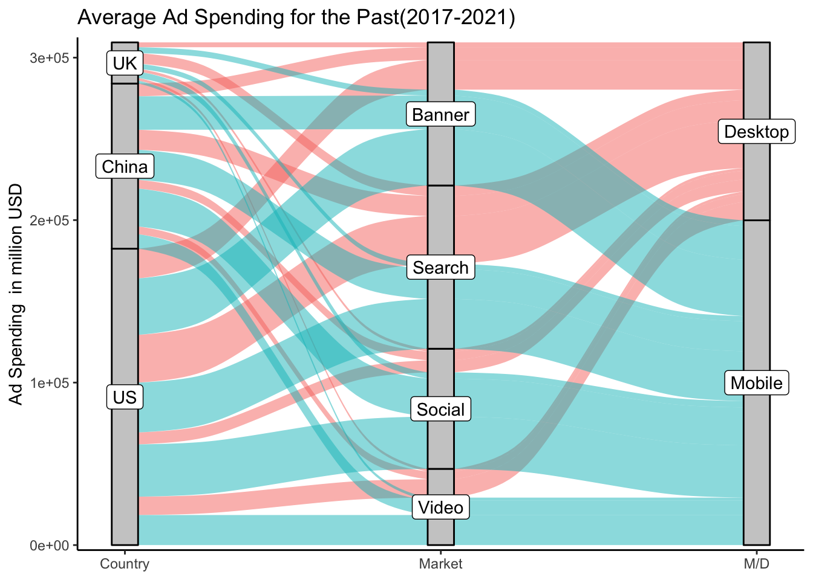

Chapter 5 Results
5.0.1 Research Question 1:
Since Classifieds(including General, Jobs, Motor, Real Estate) represents only a small portion of the overall Ad spending across all digital advertising marketplace, we only include the four major markets: Video, Banner, Social Media, and Search Advertising. We separately plot the donut charts for the past(2017-2021) and the future(predicted value for 2022-2026). For both of them, we calculated the average ad spending over 5 years and present it as the percentage in donut charts.
By the comparison between the donut chart of the past and the future, it is clear that the mobile section of Ad spending is increasing in all four markets. In particular, in Video Advertising, mobile will increase its share of AD spending by nearly 20%. Mobile AD spending in the banner and search AD markets will also increase by more than 10%. Social media advertising had the lowest growth rate, at about 5 percent, which makes sense given that mobile advertising already accounts for more than 80 percent of AD spending.
 The alluvial diagrams are also seprately plotted by the timeline(the past and the future). The alluviums are colored by Desktop and Mobile. The difference between the alluvial diagrams and donut charts is that we can take a closer look at the change in the proportion of mobile and desktop sections in different countries. As we can see, the overall proportion of the mobile section increases a lot. From countries’ sides, all three countries will increase their mobile AD spending in all four markets. More specifically, by seeing the change in width of alluviums of the mobile section, UK will increase its mobile Ad spending most in Video Advertising market; China will increase its mobile Ad spending most in Social Media Advertising market; US will increase its mobile Ad spending most in Video Advertising market.
In conclusion, the weight of ad spending will gradually shift towards the mobile side, which is in line with our expectations. We believe that with the rapid development of mobile Internet, more and more Internet users can be exposed to mobile advertising, so mobile advertising will dominate digital advertising.
5.0.2 Research Question 2:
Firstly, we’d like to get a general idea of how much advertising is spent in different markets in the three countries. As you can see from the boxplots, overall Ad spending is increasing in all three countries, regardless of markets. However, in different markets, the differences between the three countries are various. For Classifields, China has consistently been the highest spender of the three countries and will continue to grow at a faster rate than the US and UK in terms of projected value (2022-2026). In Search and Video Advertising market, the United States has been far ahead of the other two countries in terms of Ad spending, twice as much as the next largest country, China. In Social Media Advertising market, the US is also the leader, with China following at an even faster pace. In addition, The United Kingdom has consistently lagged far behind the other countries in five markets.

We calculated the return on investment ratio (revenue divided by spending) based on available data on AD spending versus revenue from 2017 to 2020. Since returns are globally aggregated, we assume that these three countries account for 50% of worldwide revenue (the accuracy of this ratio does not affect the observation of change in return ratio).
According to the heatmap, we find that the return ratio of Video and social media advertising decreases year by year, and the color change degree of social media advertising is more obvious, so the rate of return of social media decreases faster, while the return ratio of search advertising increases year by year. This finding is so interesting that we further take a closer look at advertising spending growth rate for each market over the years.
China: The overall trend of Ad Spending per Internet User across all market is increasing by projection. Social Media Advertising has the largest projected growth rate, while search advertising does not have a large projected growth rate. Though, search advertising has the largest ad spending per internet user for now, it seems that market will focus on Social Media Advertising and Banner Advertising in the future. The overall trend for Ad spending growth across all markets is a year-over-year decline, with a plateau starting in 2023. Ultimately, Video and Social Media Advertising will have similar and higher growth rates than another three advertisings’, and the other three markets will have almost similar growth rates. In addition, we also notice that the ad spending growth Video, Classifields and Search Advertising have an obvious increase from 2020 to 2021, among which search advertising has the highest proportion of increase.
## # A tibble: 10 × 4
## # Groups: Region [1]
## Region Year Market Average
## <chr> <chr> <chr> <dbl>
## 1 United States 2017-2021 Banner Advertising 181.
## 2 United States 2022-2026 Banner Advertising 257.
## 3 United States 2017-2021 Classifieds 8.44
## 4 United States 2022-2026 Classifieds 8.15
## 5 United States 2017-2021 Search Advertising 205.
## 6 United States 2022-2026 Search Advertising 334.
## 7 United States 2017-2021 Social Media Advertising 135.
## 8 United States 2022-2026 Social Media Advertising 239.
## 9 United States 2017-2021 Video Advertising 102.
## 10 United States 2022-2026 Video Advertising 183.US: The overall trend of Ad Spending per Internet User across all market is increasing by projection except for Classified. Other Advertising has similar projected growth rate, but Banner Advertising has a smaller projected growth rate on Ad Spending. It is clear that US market is still focusing on Search Advertising. The overall trend for Ad spending growth across all markets is a year-over-year decline, with a flattening out starting in 2024. Finally, the growth rates of Video, Search, and Social Media Advertising are similar and higher than that of the other two, followed by Banner and then Classified, which will maintain the lowest growth rate. In addition, Video, Classifields and Search have an obvious increase from 2020 to 2021, among which search has the highest proportion of increase.
## # A tibble: 10 × 4
## # Groups: Region [1]
## Region Year Market Average
## <chr> <chr> <chr> <dbl>
## 1 United Kingdom 2017-2021 Banner Advertising 108.
## 2 United Kingdom 2022-2026 Banner Advertising 161.
## 3 United Kingdom 2017-2021 Classifieds 29.3
## 4 United Kingdom 2022-2026 Classifieds 33.5
## 5 United Kingdom 2017-2021 Search Advertising 157.
## 6 United Kingdom 2022-2026 Search Advertising 236.
## 7 United Kingdom 2017-2021 Social Media Advertising 92.4
## 8 United Kingdom 2022-2026 Social Media Advertising 173.
## 9 United Kingdom 2017-2021 Video Advertising 56.5
## 10 United Kingdom 2022-2026 Video Advertising 102.UK: The overall trend of Ad Spending per Internet User across all market is increasing by projection. Search and Social Media Advertising has larger projected growth rate. It is clear that UK market is still focusing on Search Advertising. The overall trend for Ad spending growth across all markets is a year-over-year decline, with a plateau starting in 2023. Finally, the growth rates of Video, Search, and Social Media Advertising are similar and higher than that of the other two, followed by Banner and then Classified, which will maintain the lowest growth rate. In addition, we also find that all markets have a significant increase from 2020 to 2021, among which search has the highest proportion of increase.
Comparison between the above three line plots for each country: 1. All three countries experienced declines in Ad spending growth for all markets in 2018-2020, followed by a rebound in some or all markets in 2021, with the UK showing the largest increase. 2. From the prediction of the future growth, growth in all five markets stabilizes around 2023 for all three countries. Among them, Video, Search and Social Media Advertising in developed countries (the United Kingdom and the United States) are stable at 7-9%. However, only Video and Social Media Advertising maintain an increased rate of around 10% in China, a developing country. We speculate the reason behind it is that China has a large proportion of the population and advertising is still in the stage of development, so the growth rate could be higher. In addition, the low spending growth of Search Advertising might be due to the lack of a relatively perfect Search engine in China and the limitation of usage of Google in the country. 3. Based on the heatmap for the return ratio, the sharp and continuous declination of the return ratio for Social Media Advertising can possibly be a reason which explains the growth rate of social media advertising spending is decreasing year by year for all three countries except for the slight increase from 2019 to 2021 in the UK. 4. Based on the heatmap for the return ratio, only the return ratio of Search Advertising kept increasing from 2017 to 2020. The increased return ratio might indicate the reason why Search Advertising has the highest increase in Ad spending growth in 2021 among the three countries. 5. Based on the slope graph, US and UK have a similar situation. They spend mostly on Search Advertising, and then Social Media and Banner Advertising. China, on the other hand, spends a lot on Social Media advertising and is decreasing its spenting on Search Advertising.
5.0.3 Social Media Advertising
In Next Section, we will dig into the Social Media Advertising. As an interactive digital channel that facilitate the creation and sharing of information, ideas, and interests, social media had over 3.6 billion users in 2020 worldwide. Obviously, digital advertising will focus on social media market. China, US and UK have spent a total of 110062.6 million USD on Social Media Advertising 2021 alone. And in those countries, this spending is continuously increasing.
We first look at the demographics of social media. We could see a culture difference in it. In three countries, the largest part of users are in 25-34 years. However, in US and UK, smallest part of users are in 18-24 years, but in China, it is 55-64 years. Also, in China, there are more male users but in UK and US shows the opposite. When we check by Income levels, it is more interesting that China has more medium income users, US has more low income users, and UK has more high income users.
We will dig deeper in the next section.